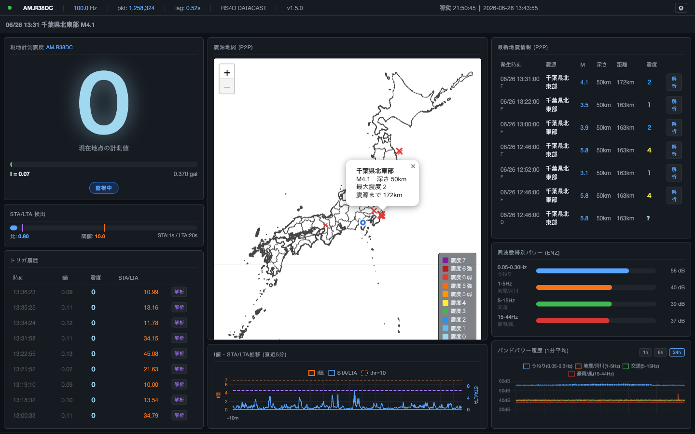
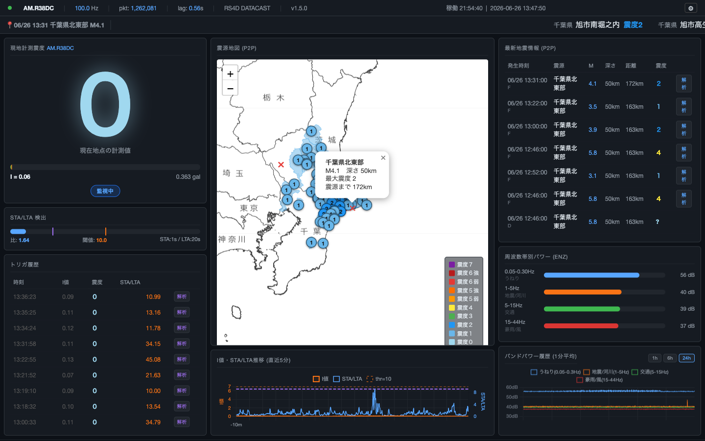
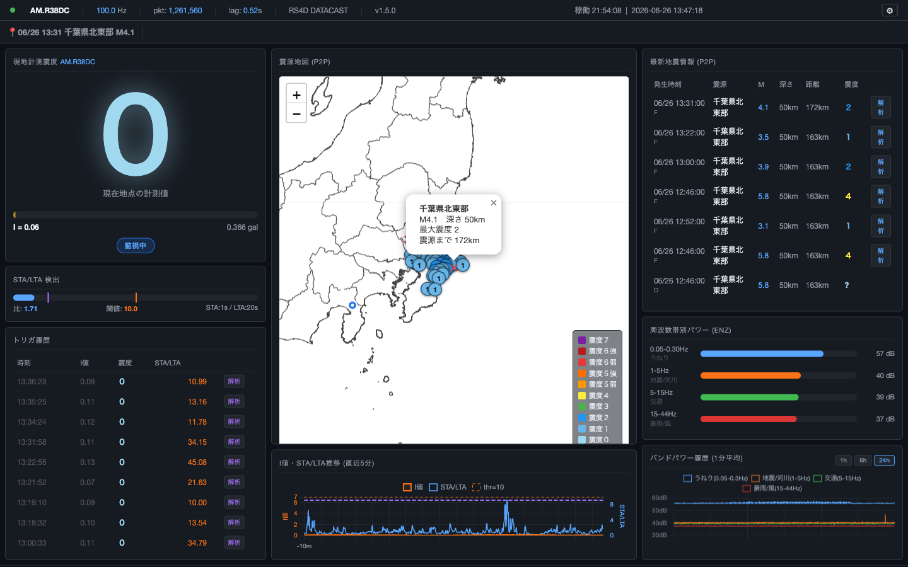

Raspberry Shake 4D の波形データをリアルタイムに受信し、気象庁の計測震度アルゴリズムで震度を算出。ブラウザから地図つきで確認できます。



センサーから画面まで、すべてオープンソース。
Raspberry Shake の DATACAST を直接受信。遅延なく波形データを取得します。
気象庁の公式フィルター処理・閾値・計算式をそのまま実装。I値・加速度（gal）をリアルタイム表示。
P2P地震情報から取得した最新地震を地図上にマッピング。マーカーサイズはマグニチュードに比例。
震度に応じた音声読み上げ（macOS say -v Kyoko）。計測震度が震度1相当（I≥0.5）を超えた時点で発話し、揺れが強まれば言い直します。
P2P地震情報 WebSocket API から EEW を受信。バナーで赤点滅表示。
Chart.js による 2 軸グラフで、直近 5 分の計測震度と STA/LTA 値の変化を可視化。
ブラウザ不要のターミナル版も付属。SSH 接続のまま監視できます。
実機なしでも動作確認できる合成波形送出ツールを同梱。
P2P地震情報テーブルの「解析」ボタンを押すだけで、自局波形のダウンロードとスペクトログラム解析を自動実行。結果画像をモーダル表示します。
センサーの生波形が、震度数値としてブラウザに届くまで。
Raspberry Shake が UDP DATACAST で生波形カウント値を送出
感度値で除算し、加速度（gal = cm/s²）に変換
気象庁規定の周波数フィルターを適用して人体感覚に補正
I = 2 log₁₀(a) + 0.94 で計測震度 I 値を計算
FastAPI が 1 秒ごとに JSON をブラウザへブロードキャスト
ハードウェアと基本的なソフトウェアが揃えば動き始めます。
クローンから起動まで 5 分で完了します。
git clone https://github.com/Masakai/earthQuake.git cd earthQuake python3 -m venv .venv source .venv/bin/activate pip install numpy scipy obspy rich websocket-client fastapi uvicorn jinja2 matplotlib
Shake の Web 設定画面で UDP/DATACAST を有効にし、送信先 IP とポート（既定: 8888）を入力します。
bash scripts/start_web.sh --station R38DC # ブラウザで http://localhost:8080 を開く
# ターミナル 1 bash scripts/start_web.sh --station R38DC --bind 127.0.0.1:9999 # ターミナル 2 .venv/bin/python3 src/simulate_udp.py --intensity 3.0 --dest 127.0.0.1:9999
AM.R38DC 観測点（静岡県三島市）の月別まとめ。P2P地震情報との照合・自局検出記録を含む私的記録です。
正式な地震情報は気象庁をご参照ください。